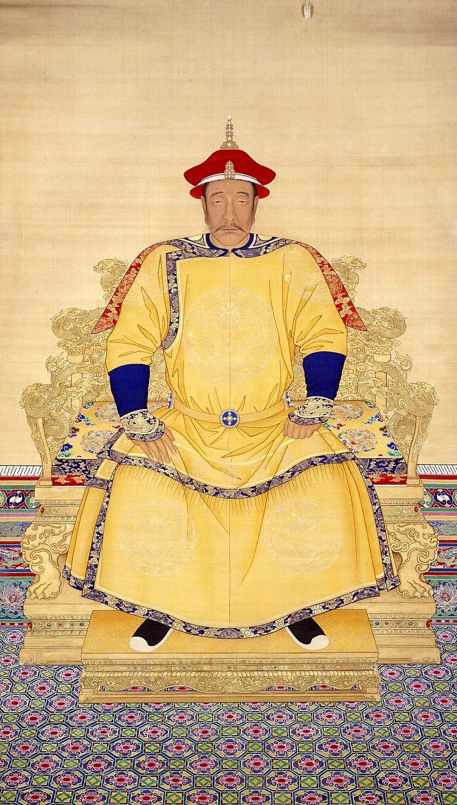
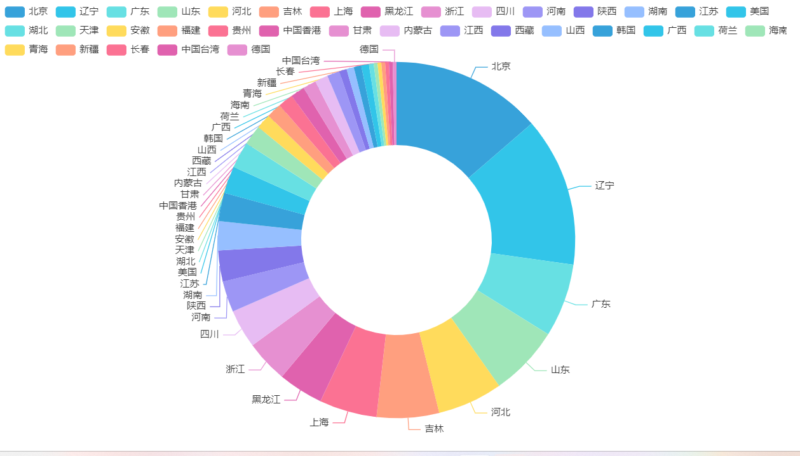
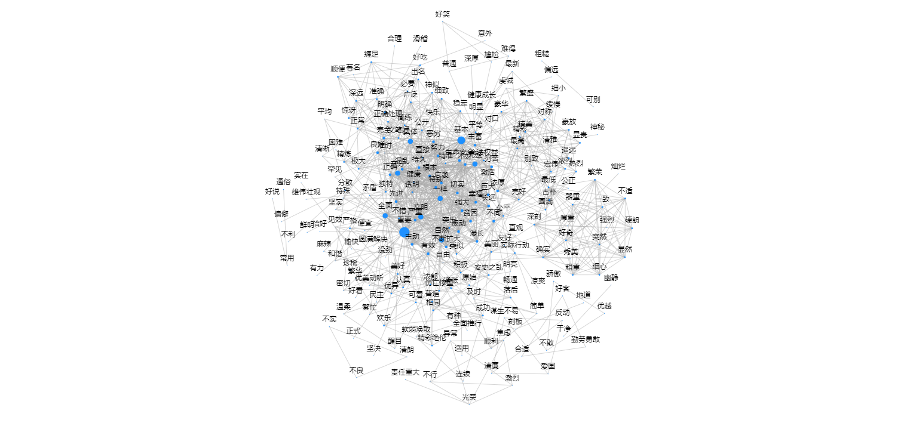
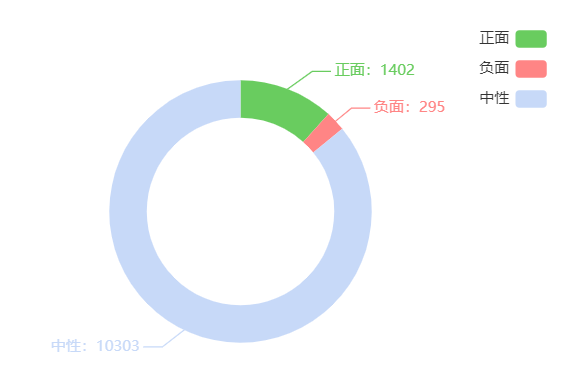
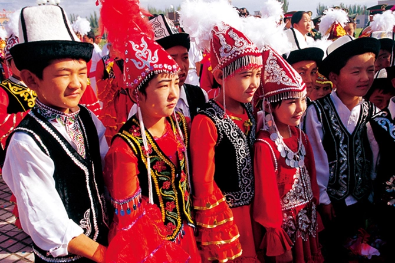

满族（满语：ᠮᠠᠨᠵᡠ）&柯尔克孜族（柯尔克孜语：Кыргыз / قىرعىز）
满族在中国55个少数民族中居第二位，人口总数为1042万人（2020年），分布于全国各地，以辽宁、河北、黑龙江、吉林和内蒙古自治区、北京等省、自治区、直辖市为多，其他散居于新疆、甘肃、宁夏、山东、湖北、贵州等省区及西安、成都、广州、福州等大中城市。
我国柯尔克孜族共有186708人（2010年），其中78.43%聚居于新疆维吾尔自治区西南部的克孜勒苏柯尔克孜自治州其余分布于新疆南部的乌什、阿克苏、温宿、拜城、塔什库尔干、疏附、英吉沙、莎车、皮山、和田和新疆北部的昭苏、特克斯、巩留、塔城、额敏、乌鲁木齐等地。此外，在黑龙江省富裕县五家子屯也有数百人聚居，是18世纪从新疆迁去的。



网民IP环形图
通过分析网民对于满族发言IP地址的地理分布，可以了解到网民在不同地区的分布情况。可以进一步探索各地区的网民数量、比例以及活跃程度，从而对不同地区对于满族的发言与互联网使用情况和网络文化做出初步了解。
存在IP地址偏差

对于微博正文的情感分析
gooseeker对微博正文进行情感分析，并在其基础上进行社会网络分析。


柯尔克孜族
“柯尔克孜”是民族的自称，也是其他民族对该民族的称呼，国外同源民族被汉译称作“吉尔吉斯”。
词云图WordCloud
柯尔克孜族文化、历史、传统、旅游等方面引起了人们的兴趣和关注
新疆
柯尔克孜族是新疆地区的少数民族之一，从数据中可以看出与柯尔克孜族和新疆相关的微博数量较多。这反映了人们对柯尔克孜族文化、历史、传统等方面的关注和讨论。同时，新疆作为多民族聚居的地区，其独特的地理位置和多元文化也引起了人们的兴趣。
柯尔克孜族